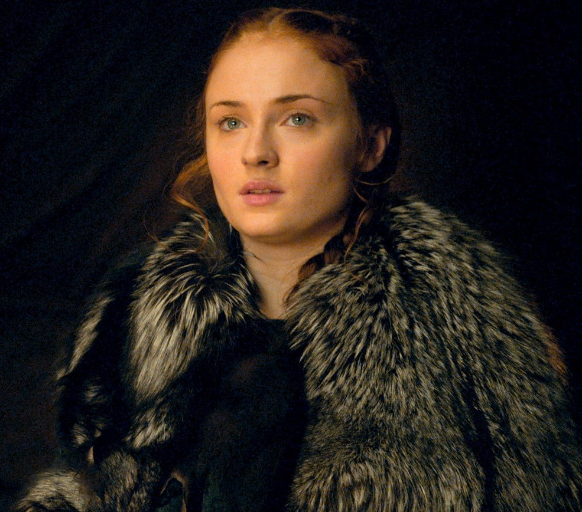
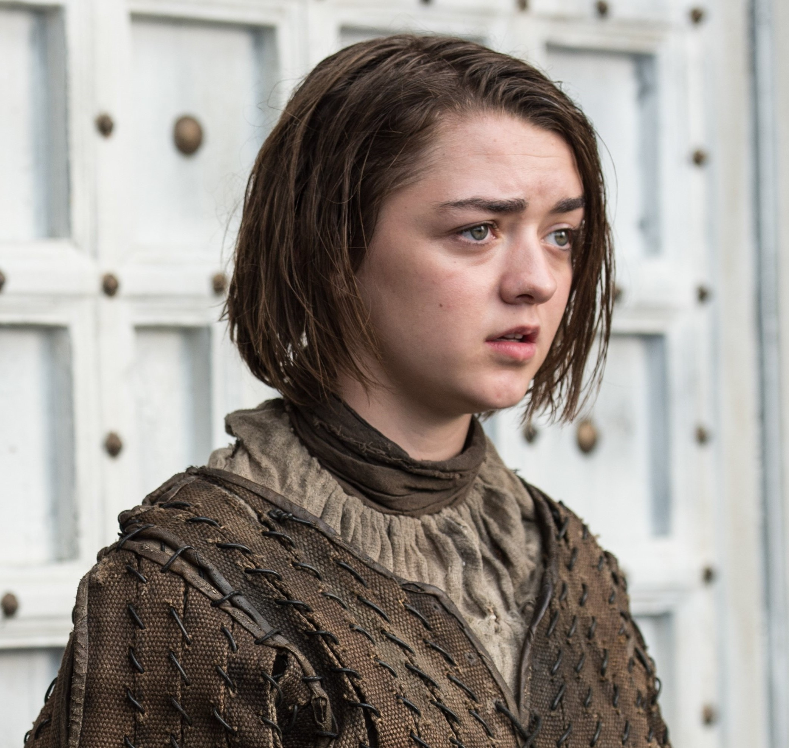
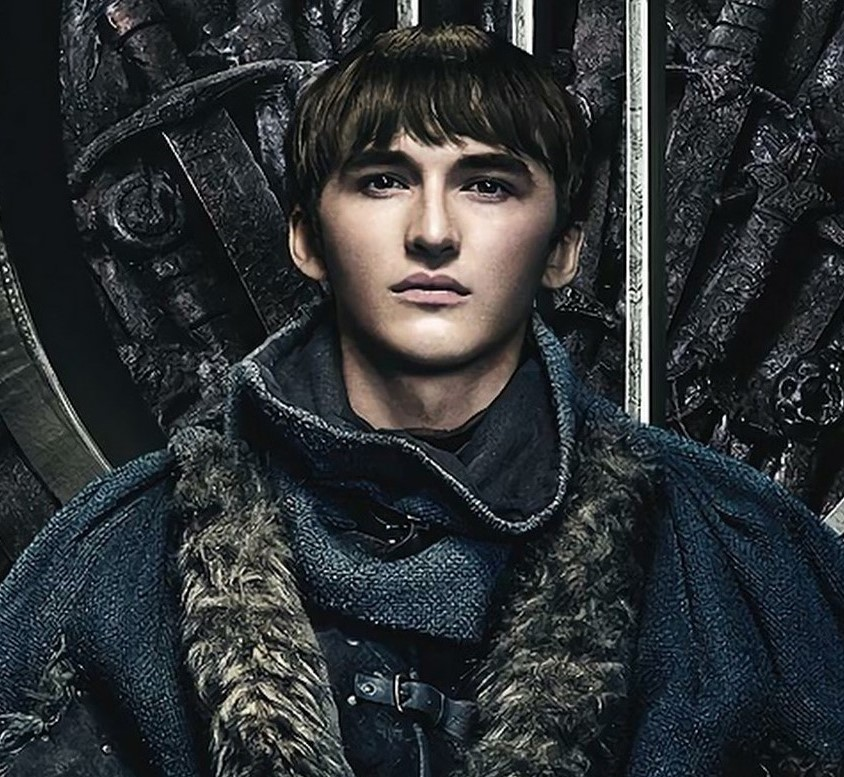

Ned Stark

Catelyn Stark

Rob Stark

Sansa Stark

Aria Stark

Lord Eddard Stark was the head of House Stark. Eddard's execution and revealing of the illegitimacy of Cersei Lannister's children was the spark of the War of the Five Kings, being posthumously responsible for the involvement of four of the kings in this war.
Catelyn Stark, or Cat to family and close friends, is a fictional character in the A Song of Ice and Fire series of fantasy novels by American author George R. R. Martin, and its television adaptation Game of Thrones. She is a prominent point of view character in the first three novels.
King Robb Stark was the eldest son of Lord Eddard Stark of Winterfell and his wife, Lady Catelyn. Robb was declared King in the North during the War of the Five Kings, after the execution of his father by King Joffrey Baratheon.
Sansa Stark is the eldest daughter of Eddard Stark of Winterfell and his wife Catelyn. She initially starts off with a very naive view of the world, but as time goes on and she and her family suffer one cruelty and betrayal after another, she becomes a more hardened and learned individual.
Arya Stark is the third child of Eddard Stark and Catelyn Stark. After narrowly escaping the persecution of House Stark by House Lannister, Arya is trained as a Faceless Man at the House of Black and White in Braavos, and uses her new skills to bring those who have wronged her family to justice.
Brandon Stark, commonly called Bran, is the fourth child and second son of Eddard and Catelyn Stark. Bran is a warg and currently the new Three-Eyed Raven, using his supernatural gifts to assist his family in the war against the White Walkers.